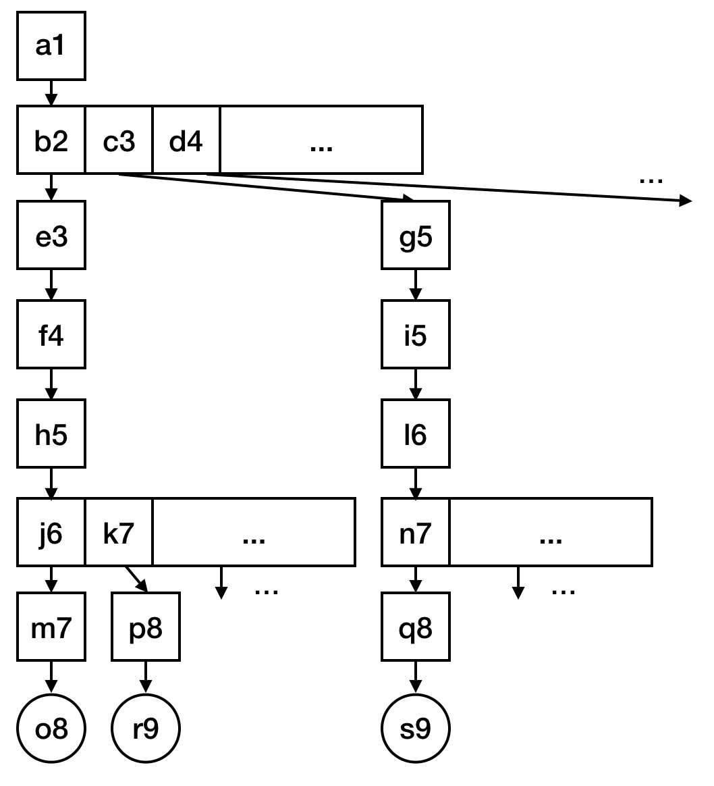

5The Mechanism of Egison Pattern Matching
This chapter explains the internal mechanism of pattern matching in Egison. First, Section 5.1 provides an overview. From Section 5.2 onward, we explain the details necessary for implementing Egison pattern matching yourself. Readers who simply want to learn how to use Egison may skip ahead to Chapter 6 after reading Section 5.1.
5.1Overview of the Pattern-Matching Algorithm
We will grasp an overview of Egison's internal pattern-matching algorithm by examining what processing takes place when the following matchAll expression is executed.
matchAll [2,8,2] as multiset eq with
| $m :: #m :: _ -> m
-- [2,2]Upon receiving the above matchAll expression, the Egison interpreter internally generates an object called a matching state. A matching state consists of a stack of matching atoms, intermediate results of pattern matching (in the case below, []), and the environment at the time the matchAll expression is executed (in the case below, env). A matching atom is a triple consisting of a pattern, a matcher, and a target. The initial matching state is constructed from a stack containing a single matching atom composed of the pattern, matcher, and target of the matchAll expression. Egison's internal pattern-matching algorithm is defined as a reduction process on matching states. When the stack of matching atoms becomes empty as a result of reduction, the pattern match succeeds.
MState [($m :: #m :: _, multiset eq, [2,8,2])]
[] envThis matching state is reduced to the following three matching states in the next step. This reduction is performed based on the definition of the cons pattern in the multiset matcher (explained in Chapter 6, Section 6.4).
MState [($m, eq, 2)
,(#m :: _, multiset eq, [8,2])]
[] env
MState [($m, eq, 8)
,(#m :: _, multiset eq, [2,2])]
[] env
MState [($m, eq, 2)
,(#m :: _, multiset eq, [2,8])]
[] envIn this way, reducing a single matching state by one step can produce multiple matching states. The number of matching states produced can be zero, or even infinitely many. The order in which these matching states are reduced is discussed in Section 5.2. Here, we look at the reduction of the first matching state. The first matching state is reduced as follows in the next step. The matcher of the matching atom at the top of the stack changes from eq to something. This reduction is defined in the eq matcher. (We will see its definition in Chapter 6, Section 6.3.)
MState [($m, something, 2)
,(#m :: _, multiset eq, [8,2])]
[] envsomething is Egison's only built-in matcher, and it can add new bindings to the intermediate results of pattern matching. Here, the variable m is bound to 2.
MState [(#m :: _, multiset eq, [8,2])]
[(m, 2)] envAgain, the matching state is reduced based on the definition of the cons pattern in multiset.
MState [(#m, eq, 8)
,(_, multiset eq, [2])]
[(m, 2)] env
MState [(#m, eq, 2)
,(_, multiset eq, [8])]
[(m, 2)] envThe first matching state above fails the pattern match on the value pattern #m and is eliminated. (This can also be described as the reduction producing zero matching states.) The second matching state has its top matching atom resolved and becomes:
MState [(_, multiset eq, [8])]
[(m, 2)] envThis matching state also has its top matching atom resolved and becomes:
MState []
[(m, 2)] envWhen the stack of matching atoms finally becomes empty as shown above, this intermediate result of pattern matching is used as the final result to evaluate the body.
5.2Search Tree Traversal by matchAll and matchAllDFS
This section explains what kind of search tree is traversed internally when matchAll and matchAllDFS expressions are executed. Reducing a single matching state produces multiple matching states, ranging from zero to infinitely many. Therefore, Egison's internal pattern-matching algorithm can be thought of as a tree search rooted at the initial matching state.
First, let us look at the search tree of the following matchAllDFS expression.
take 8 (matchAllDFS [1..] as set integer with
| $m :: $n :: _ -> (m, n))
-- [(1, 1), (1, 2), (1, 3), (1, 4), (1, 5), (1, 6), (1, 7), (1, 8)]The search tree of this matchAllDFS expression is as shown in Figure 5.2. In the figure, rectangles represent individual matching states. Circles represent matching states whose matching atom stacks have become empty—the final results of pattern matching.

matchAllDFS expression
The matchAllDFS expression traverses this search tree using depth-first search.
Therefore, the matching states are reduced in the order a1, b2, e3, f4, h5, j6, m7, o8, k7, p8, r9, …. Matching state h5 is reduced to infinitely many matching states (j6, k7, …). Because of this, depth-first search never reaches the reduction of matching state c3. Thus, with matchAllDFS, it may not be possible to traverse all matching states and enumerate all countably infinite pattern-matching results.
The matchAll expression transforms this search tree and performs breadth-first search in order to enumerate all countably infinite pattern-matching results. Figure 5.2 shows the search tree when the following matchAll expression is executed.
take 8 (matchAll [1..] as set integer with
| $m :: $n :: _ -> (m, n))
-- [(1, 1), (1, 2), (2, 1), (1, 3), (2, 2), (3, 1), (1, 4), (2, 3)]
matchAll expression
In the search tree of Figure 5.2, a single matching state corresponds to a single node. In the search tree of Figure 5.2, however, a sequence of matching states forms a single node. For example, a1 is a node consisting of a single matching state, while b2, c3, d4, … is a single node consisting of infinitely many matching states. Viewed this way, the search tree becomes a binary tree. Because the search tree is a binary tree, every node has a finite number of children, so breadth-first search can traverse all nodes.
The transformation from Figure 5.2 to the binary tree of Figure 5.2 can be achieved by viewing the search tree of Figure 5.2 diagonally. Let us focus on the node consisting of b2, c3, d4, …. The children of this node are the node consisting of e3 alone, and the node consisting of c3, d4, …. In general, the children of a node are the result of reducing the first matching state of that node, and the list of matching states obtained by removing the first element from that node.
5.3Implementation of And-Patterns, Or-Patterns, and Not-Patterns
This section explains the implementation of and-patterns, or-patterns, and not-patterns (Chapter 2, Section 2.6) as examples of built-in pattern implementations.
Let us start with the implementation of and-patterns. Consider the following pattern match containing an and-pattern.
matchAll [1, 2, 3] as list integer with
| $n :: (_ :: _ & $rs) -> (n, rs)
-- [(1, [2, 3])]In the process of handling this pattern match, the following matching state reduction is reached.
MState [(_ :: _ & $rs, [2, 3], list integer)]
[(n, 1)] envWhen the pattern of the matching atom at the top of the stack is an and-pattern, the Egison interpreter reduces it as follows.
MState [(_ :: _, [2, 3], list integer)
,($rs, [2, 3], list integer)]
[(n, 1)] envFor each argument of the and-pattern, a matching atom constructed with the same target and matcher is pushed onto the stack.
Next, let us look at the implementation of or-patterns. Consider the following pattern match containing an or-pattern.
matchAll [1, 1, 2] as list integer with
| $m :: ([] | #m :: _) -> m
-- [1]In the process of handling this pattern match, the following matching state reduction is reached.
MState [(([] | #m :: _), [1, 2], list integer)]
[(m, 1)] envWhen the pattern of the matching atom at the top of the stack is an or-pattern, the Egison interpreter reduces it as follows.
MState [([], [1, 2], list integer)]
[(m, 1)]
MState [(#m :: _, [1, 2], list integer)]
[(m, 1)] envFor each argument of the or-pattern, a matching state is generated with a matching atom constructed from the same target and matcher placed at the top of the stack.
Finally, let us look at the implementation of not-patterns. Consider the following pattern match containing a not-pattern.
matchAll [2, 8, 2] as multiset integer with
| $m :: (!(#m :: _) & $rs) -> (m, rs)
-- [(8, [2,2])]In the process of handling this pattern match, the following matching state reduction is reached.
MState [(!(#m :: _), [2, 2], multiset integer)
,($rs, [2, 2], multiset integer)]
[(m, 8)] envWhen the pattern of the matching atom at the top of the stack is a not-pattern, the Egison interpreter generates a matching state whose stack contains only the matching atom obtained by removing the not from the not-pattern at the top of the stack.
MState [((#m :: _), [2, 2], multiset integer)
[(m, 8)] envIf reducing this matching state produces no matching states that succeed in pattern matching, then the following matching state—obtained by removing the matching atom with the not-pattern from the top of the original matching state—is reduced.
MState [($rs, [2, 2], multiset integer)]
[(m, 8)] env5.4Implementation of Pattern Functions
This section explains the implementation of pattern functions. Consider the following pattern match containing a pattern function application.
def twin := \p1 p2 => (~p1 & $x) :: #x :: ~p2
matchAll [1, 2, 1, 3] as multiset integer with
| $m :: twin $n _ -> (m, n)
-- [(2, 1), (2, 1), (3, 1), (3, 1)]In the process of handling this pattern match, the following matching state reduction is reached.
MState [(twin $n _, [1, 1, 3], multiset integer)]
[(m, 2)]When the pattern of the matching atom at the top of the stack is a pattern function application, the pattern function is expanded. Simultaneously with this expansion, the matching atom is converted into a data structure called MNode, which has almost the same structure as MState. An MNode has intermediate results of pattern matching (in the case below, []), the environment at the time the pattern function was defined (in the case below, env1), and the environment of patterns bound to the pattern function's parameters (in the case below, [(p1, $n), (p2, _)]). This nested MState-like structure is created in order to realize static scoping of patterns.
MState [MNode [(~p1 & $x) :: #x :: ~p2, [1, 1, 3], multiset integer)]
[]
env1
[(p1, $n), (p2, _)]]
[(m, 2)] envReducing this matching state leads to a matching state where the pattern at the top of the stack is a formal parameter of the pattern function (in the case below, p1).
MState [MNode [(p1, 1, integer),
(#x :: ~p2, [1, 3], multiset integer)]
[(x, 1)]
env1
[(p1, $n), (p2, _)]]
[(m, 2)] envThe pattern bound to p1 is retrieved from the environment of patterns bound to the pattern function's parameters (the third argument of MNode), and the matching atom's pattern is expanded to that pattern. At the same time, this matching atom is lifted from the MNode to the matching atom of the MState.
MState [($n, 1, integer),
MNode [(#x :: ~p2, [1, 3], multiset integer)]
[(x, 1)]
env1
[(p1, $n), (p2, _)]]
[(m, 2)] env%
%matchAll [1..4] as multiset integer with
%| $a_1 ::
% (loop $i (2, 4)
% ((loop $j (1, i - 1)
% (!#(a_j - (i - j)) & !#(a_j + (i - j)) & ...)
% $a_i) :: ...)
% []
%-> map (\i -> a_i) [1..4]
%%
%MState []
% [($a_1 ::
% (loop $i (2, 4)
% ((loop $j (1, i - 1)
% (!#(a_j - (i - j)) & !#(a_j + (i - j)) & ...)
% $a_i) :: ...)
% []]
% ,multiset integer, [1,2,3,4])]
% [] env
%%
%MState []
% [($a_1, something, 2)
% ,((loop $i (2, 4)
% ((loop $j (1, i - 1)
% (!#(a_j - (i - j)) & !#(a_j + (i - j)) & ...)
% $a_i) :: ...)
% []]
% ,multiset integer, [1,3,4])]
% [] env
%%
%MState []
% [((loop $i (2, 4)
% ((loop $j (1, i - 1)
% (!#(a_j - (i - j)) & !#(a_j + (i - j)) & ...)
% $a_i) :: ...)
% []]
% ,multiset integer, [1,3,4])]
% [(a, {|[1, 2]|})] env
%%
%MState [((i, 2), [4], _, ((loop $j (1, i - 1)
% (!#(a_j - (i - j)) & !#(a_j + (i - j)) & ...)
% $a_i) :: ...), [])]
% [((loop $i (2, 4)
% ((loop $j (1, i - 1)
% (!#(a_j - (i - j)) & !#(a_j + (i - j)) & ...)
% $a_i) :: ...)
% []]
% ,multiset integer, [1,3,4])]
% [(a, {|[1, 2]|})] env
%